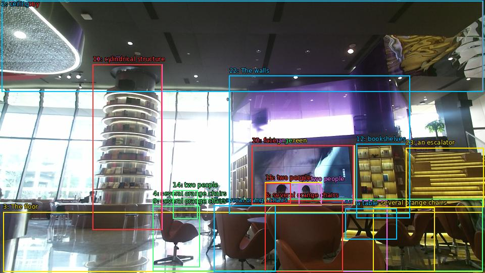

The image shows the interior of a modern and luxurious lobby of a hotel. The lobby has a high ceiling with recessed lighting and large windows that let in natural light. The floor is made of marble tiles and there are several orange chairs and tables scattered throughout the space. On the left side of the image, there is a tall, cylindrical structure with multiple levels of bookshelves. In the center of the room, there are two people sitting at a table and a large screen displaying an image of a woman's face. The walls are painted in a combination of purple and yellow, and there is an escalator on the right side. The overall atmosphere of the lobby is bright and airy.

Original · Caption raw · Grounding raw · Koordinate
Številke so lokalni ID regije. Dolge slikovne oznake so skrajšane; spodaj so celotne fraze. Napovedane regije se lahko prekrivajo ali opisujejo skupine.
| ID | Celotna fraza | bbox xyxy |
|---|---|---|
| 1 | The lobby | [3.359999895095825, 1.8900001049041748, 955.6799926757812, 181.17001342773438] |
| 2 | ceiling | [3.359999895095825, 1.8900001049041748, 956.6399536132812, 181.17001342773438] |
| 3 | The floor | [6.239999771118164, 419.3100280761719, 955.6799926757812, 537.5700073242188] |
| 4 | several orange chairs | [302.8800048828125, 393.3900146484375, 955.6799926757812, 536.4900512695312] |
| 5 | several orange chairs | [524.6400146484375, 396.09002685546875, 766.5599975585938, 537.5700073242188] |
| 6 | several orange chairs | [524.6400146484375, 396.09002685546875, 678.239990234375, 537.030029296875] |
| 7 | several orange chairs | [423.8399963378906, 406.3500061035156, 545.760009765625, 537.5700073242188] |
| 8 | several orange chairs | [738.719970703125, 410.6700134277344, 860.6399536132812, 537.5700073242188] |
| 9 | several orange chairs | [302.8800048828125, 407.9700012207031, 395.03997802734375, 528.9299926757812] |
| 10 | a tall | [183.83999633789062, 127.17000579833984, 321.1199951171875, 454.4100036621094] |
| 11 | cylindrical structure | [183.83999633789062, 127.17000579833984, 320.1600036621094, 454.4100036621094] |
| 12 | bookshelves | [705.1199951171875, 284.8500061035156, 811.6799926757812, 431.19000244140625] |
| 13 | two people | [524.6400146484375, 360.9900207519531, 636.9599609375, 406.8900146484375] |
| 14 | two people | [342.239990234375, 376.1100158691406, 391.1999816894531, 432.8100280761719] |
| 15 | two people | [591.8399658203125, 363.69000244140625, 636.9599609375, 406.8900146484375] |
| 16 | two people | [525.5999755859375, 362.07000732421875, 575.5199584960938, 402.030029296875] |
| 17 | a table | [683.0399780273438, 412.2900085449219, 785.760009765625, 473.8500061035156] |
| 18 | a large screen | [498.7200012207031, 287.5500183105469, 702.239990234375, 405.8100280761719] |
| 19 | an image | [498.7200012207031, 287.5500183105469, 701.2799682617188, 405.27001953125] |
| 20 | woman | [498.7200012207031, 287.5500183105469, 700.3200073242188, 404.7300109863281] |
| 21 | face | [498.7200012207031, 287.5500183105469, 699.3599853515625, 404.7300109863281] |
| 22 | The walls | [453.5999755859375, 149.85000610351562, 811.6799926757812, 422.5500183105469] |
| 23 | an escalator | [803.0399780273438, 292.4100036621094, 957.5999755859375, 409.0500183105469] |